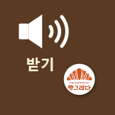

[주의] 카카오톡 안에서 열려 있어요. 설치가 안 되니 오른쪽 ⋮(또는 공유) → 「다른 브라우저로 열기」를 눌러 주세요.
방송실 화면 3개를 휴대폰·PC에 앱처럼 설치할 수 있어요. 설치하면 홈 화면 아이콘 하나로 바로 열려요.
확인 필요처음 열 때 번호가 필요해요. 번호는 이 페이지에 없어요. 이사님께 1:1로 받아 주세요.

방송실 받기
직원 휴대폰 · 생산실 · 사무실 PC- 방송이 오면 소리와 큰 글씨로 떠요.
- 「✅ 확인」·「💬 답장」을 할 수 있어요.
참고휴대폰은 이 앱을 켜 둔 동안만 받아요. 앱을 닫거나 화면이 꺼지면 알림이 오지 않아요.
📲 이 기기에 설치하기
휴대폰 카메라로 찍으면 열려요
lee1812-oss.github.io/pos/bang.html
lee1812-oss.github.io/pos/bang.html
방송실 보내기
이사님·대표님 (보내기 번호 있는 분만)- 글이나 녹음으로 방송을 보내요.
- 받을 곳(전체·그룹·화면 이름)을 고를 수 있어요.
확인 필요직원 휴대폰에는 설치하지 않아요.
📲 이 기기에 설치하기
휴대폰 카메라로 찍으면 열려요
lee1812-oss.github.io/pos/send.html
lee1812-oss.github.io/pos/send.html
방송실 관리
이사님만- 방송 받는 화면들의 이름·그룹을 정해요.
- 켜짐·꺼짐과 안 쓰는 화면 끊기를 봐요.
확인 필요보내기 번호로만 열려요.
📲 이 기기에 설치하기
휴대폰 카메라로 찍으면 열려요
lee1812-oss.github.io/pos/bang_admin.html
lee1812-oss.github.io/pos/bang_admin.html
설치 순서 (「설치하기」를 누르면 그 화면 아래에도 안내가 떠요)
① 안드로이드 (크롬)
- 위 카드의 「📲 이 기기에 설치하기」를 눌러요.
- 아래에 뜬 「앱으로 설치하기」 → 「설치」.
- 단추가 안 뜨면 오른쪽 위 ⋮ → 「앱 설치」 또는 「홈 화면에 추가」.
- 삼성 인터넷은 아래 ≡ → 「현재 페이지 추가」 → 「홈 화면」.
② 아이폰 (사파리)
- 위 카드의 「📲 이 기기에 설치하기」를 눌러요.
- 화면 아래 공유 단추(네모에 ↑).
- 목록을 내려 「홈 화면에 추가」 → 오른쪽 위 「추가」.
- 카카오톡·네이버 앱 안에서는 안 되니 사파리로 열어 주세요.
③ PC (크롬·엣지)
- 위 카드의 「📲 이 기기에 설치하기」를 눌러요.
- 아래에 뜬 「앱으로 설치하기」 → 「설치」.
- 또는 주소창 오른쪽 설치 아이콘(모니터에 ↓).
- 바탕화면·시작 메뉴에 아이콘이 생겨요.
이 안내 페이지 주소예요. PC에서 보고 있다면 휴대폰 카메라로 찍어 휴대폰에서 열어 주세요.
lee1812-oss.github.io/pos/apps.html
lee1812-oss.github.io/pos/apps.html